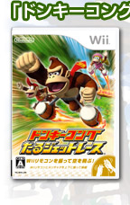
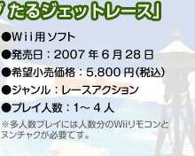
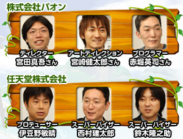
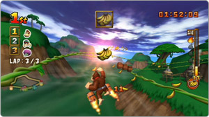
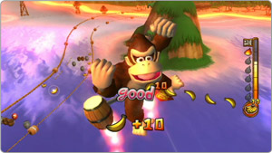
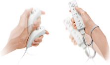

宮田：最初はオーソドックスなレースゲームということで、通常どおりスピンもするし逆走もできる仕様にしてみたんです。操作は独特だけど見た目は普通のレースゲームでした。
|  |  |  |
| ドンキーコングを使ったレースのゲームを作ろうとしたキッカケを教えてください。 |
伊豆野：パオンさんと協力させていただいたゲームボーイアドバンスの『ぶらぶらドンキー』の開発の後で、今度はテレビの画面の前でみんなでワイワイ遊べるゲームを作りたいというのがスタートでした。最初から対戦を軸に考えていましたね。
伊豆野：私や鈴木はレースゲームがすごく好きなんですよ。だから「特定のボタンを押しながら曲がるとドリフト！」みたいな部分を捨て切れなくて、レースゲームを好きな人が楽しめるストイックな方向へ進んでしまった時期がありましたね。
西村：そのストイックな時期の試作品を任天堂の社内でいろんな人にプレイしてもらうと、「Ｗｉｉで直感的に遊ぶなら楽しくやりたい」とか、「皆でワイワイ遊んでいる光景を眺めても楽しいゲームにしてほしい」という意見があがってきたんです。これはドンキーコングというキャラクターの持つイメージも大きく影響していたと思いますが。
宮田：Ｗｉｉで開発することが決まったときは、いろいろと夢が膨らみました。レース中に出てくる全部の操作を、Ｗｉｉリモコンを振ることだけで対応したいと考えたり。例えばアタックはＷｉｉリモコンを左右へ、ワイルドムーブはＷｉｉリモコンを前に突き出す、といったように、いろんな実験を繰り返していました。
赤堀：企画があがってくるとＷｉｉならではの内容で興味深いんですけれど、プログラムをまとめる側としては大変でしたね（笑）。
西村：パフォーマンスバレルに入った後、Ｗｉｉリモコンを振ってパフォーマンスを決める操作は、Ｗｉｉリモコンだからこそできたことですね。Ｗｉｉリモコンを振ってポーズが決まったときの感覚にはＷｉｉならではものがあります。
宮田：過去に捉われない新しい操作方法を考えるのはとても有意義だったのですが、そのうち収拾がつかない状況に陥ったりもしました。
伊豆野：そこで判断の基準になったのは、やはり単純明快、シンプルにしようということでしたね。
西村：大変だった例を挙げると、アタックの操作があります。実は当初、Ｗｉｉリモコンを振ってアタックする形だったんです。直感的に楽しんでもらうために、この操作はどうしても外したくなかったのですが、最終的には、誤動作だけはさせたくないということから、ボタン操作に変更しました。しかし見かたを変えれば、直感的な振る操作とボタンやスティックでの操作が同時に可能なＷｉｉリモコンとヌンチャクだからこそ、うまく整理することができた、とも言えますね。
鈴木：じつはＷｉｉリモコンって人によって振り方の個性があるんですよ。手首だけで振る人もいれば、肘から振る人もいる。振る方向も縦だけではなくて少し斜めになっていたりもするわけです。このこと自体は大変面白いと思っているんですが、操作感の調整をする立場から考えると無視できない問題でした。いろんな振り方をするすべての人に、ちゃんと楽しんでもらえるゲームに仕上げないことには世に出せないと。
西村：あるバージョンではジャンプが出にくいという意見が多くて、もう少しジャンプの判定を甘くして欲しいとパオンさんへお願いすると、次のバージョンでは走っている最中にもジャンプしてしまう場合が出てくる。その辺の調整はすごく難しかったですね。
伊豆野：色々と試してみると右利きの人と左利きの人でも操作感が少しちがってきますから、ゲーム中で利き腕の設定を切り替えられるようにもしています。調整は大変でしたが、最終的には誰もが気軽に楽しめる操作体系にまとめられたと思います。